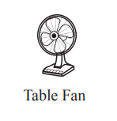
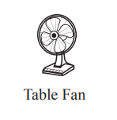

Background: D. M. Bandaranaike is an independent candidate running for the 2024 Sri Lankan presidential election. His candidacy represents an alternative to the dominant political forces, appealing to voters seeking change outside the major parties.
Political Experience: Limited information is available about his past political career, suggesting he may be a newcomer to national-level politics or focused on regional issues.
Political Campaign and Promises
Economic Development: Likely to focus on addressing regional inequalities and promoting sustainable growth.
Good Governance: Advocates for transparency and accountability in the public sector.
Social Justice: Tackles issues related to marginalized communities and social inequality.
Election Symbol
Symbol: The Table Fan symbol signifies relief and comfort, suggesting his campaign aims to provide a refreshing alternative to the current political climate.
Challenges and Opportunities
Visibility: Faces challenges in gaining national attention and media coverage as an independent candidate.
Campaign Infrastructure: Lacks the backing of a major party, making it harder to build a widespread, well-funded campaign.
Appeal: May attract disillusioned voters seeking an alternative to traditional political parties.
2024 Political Prospects
Position in 2024 Elections: Highlights the diversity of choices in the presidential race, offering an alternative to mainstream politics.
Personal and Political Vision
Personal Background: Limited personal information is available, suggesting either a newcomer to politics or a low-profile public figure.
Political Vision: Expected to become clearer as the campaign progresses.

 
